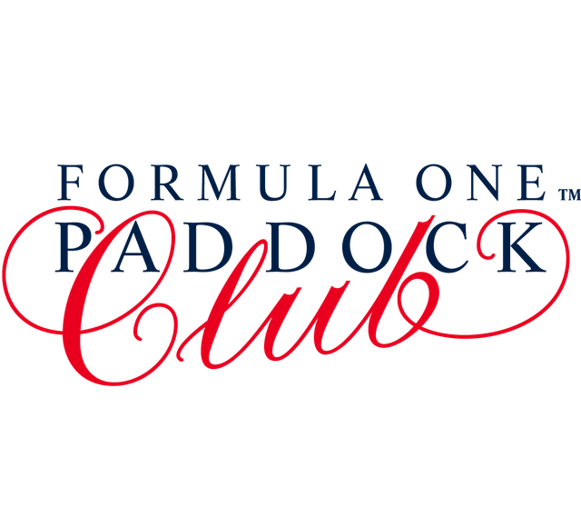

Russia F1
2016 FORMULA 1 RUSSIAN GRAND PRIXSochi.
Spain F1
FORMULA 1 GRAN PREMIO DE ESPAÑA PIRELLI 2016Catalunya.
Monaco F1
FORMULA 1 GRAND PRIX DE MONACO 2016Monte Carlo.
Canada F1
FORMULA 1 GRAND PRIX DU CANADA 2016Montreal.
Europe F1
2016 FORMULA 1 GRAND PRIX OF EUROPEBaku.
Austria F1
FORMULA 1 GROSSER PREIS VON ÖSTERREICH 2016Spielberg.
FORMULA ONE TICKETS
The Monaco Grand Prix is simply the most glamorous event on the sporting calendar. Each year the glitterati are drawn to the world’s most exclusive playground and the tightest track in Formula One™ racing. During the day the driver’s skill and bravery is rewarded in equal measure as he tears through the narrow streets of Monaco harbour; at night, stamina is the key if you want to make the most of Monte-Carlo.
Get TicketsPADDOCK CLUB™
F 1 Gallery

F 1 Racing footage17 April, 2016
F 1 Racing footage17 April, 2016
F 1 Racing footage17 April, 2016
F 1 Racing footage17 April, 2016
F 1 Racing footage17 April, 2016
F 1 Racing footage17 April, 2016
F 1 Racing footage17 April, 2016